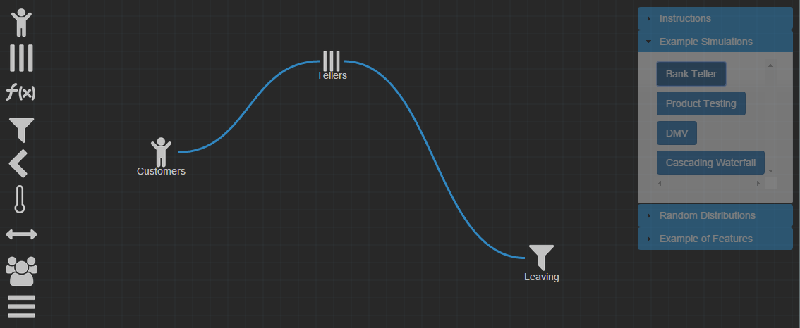
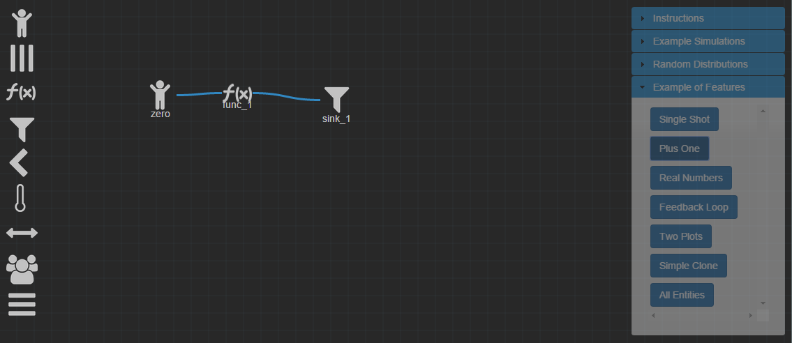
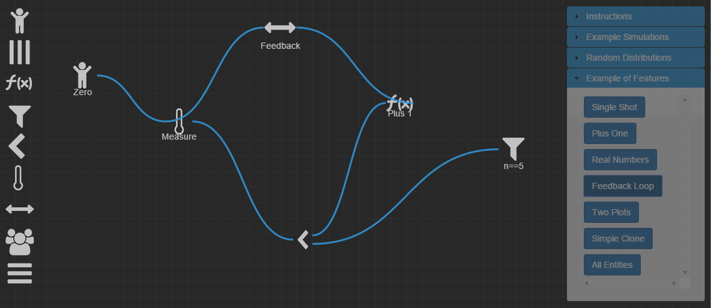
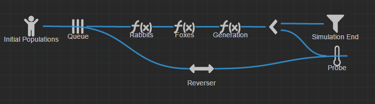
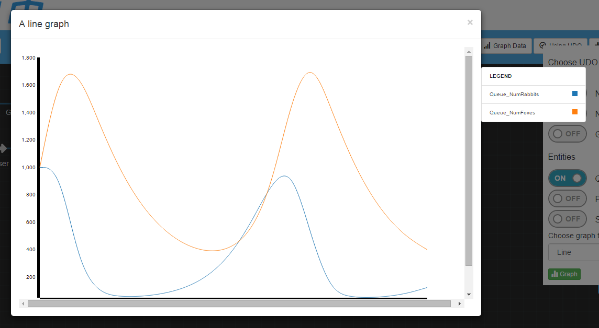

Demo Simulations
Packaged with BLUESIM are six example simulations.
These demos are designed to introduce you to some of the basic functionality of BLUESIM and its possibilities.
You can find descriptions of these simulations by navigating the menu above. View them live by clicking "Example Models and Exercises" on the main BLUESIM canvas.
Bank Teller
Walkthrough:
Once the simulation starts, customers are generated at the source.
Customers enter the queue FIFO (First In, First Out). The queue determines how long each customer needs to wait before they are servered by one of the five tellers.
Once a customer has time to be "served" by a teller, they leave the queue and "leave" the simulation through the sink.
Once the simulation completes, the sink outputs the simulation's data.
Entities used:

Source
The source for the bank teller demo is a group of customers with an exponential distribution function and a paramter of 5.

Queue
The queue represents the tellers. It is set to have a Gaussian distribution with parameters 5 and 1. The max queue length is set to 10 with 5 servers active.

Sink
The sink accepts all customers who have left the queue. In this simulation, it represents the customers that have been served by a teller.
Plus One
Walkthrough:
Once the simulation starts, integers are generated at the source.
Each generated integer is passed to the source and has the function "+1" applied to it.
Once the simulation completes, the sink outputs the simulation's data.
Entities used:
Source
The source creates data (integers) that are passed to the function.

Function
The function is a simple +1 additional to the data from the source.
Sink
The sink accepts all data points that have had +1 applied to them.
Feedback Loop
Walkthrough:
Once the simulation starts, integers are generated at the source.
As the first step in the loop, integers are measured at their current values. During the first pass, this integer is measured at a value of 0.
At the spilt function, the integer is evaluated. If it is <5, it is sent to the top channel towards the function. Otherwise, it is sent to the bottom channel towards the sink. During the first pass, since 0 is less than 5, it is sent to the top channel.
Values passed to the top channel pass through the function block which increments the value of the integer by one.
The integer is passed through a reverser which helps with visual clarity. The reverser does not change the value, but paths are easier to see.
At this point, the integer begins the loop starting with Step 2. The integer is measured, sent to the split function, incremented by 1, and repeated while the integer has a value less than 5.
We will reach a point in the function where the integer contains a value of 5. When it reaches the split function, it no longer gets passed to the top channel and is instead sent to the sink. Once the sink receives the value, the simulation is complete.
Entities used:
Source
The source creates data (integers) that are passed to the function.

Reverser
Since entities cannot connect back to themselves, a reverser is necessary to allow a path from the function block to the thermometer.

Thermometer
Measures the value of the integers passed in from the reverser
Function
The function is a simple +1 additional to the data from the source.

Splitter
This entity evaluates incoming integers. If the integer is <5, it is sent to the top channel.
Sink
The sink accepts all data points that have a value >= 5.
Predator-Prey
Predator-Prey Graph

Walkthrough:
Once the simulation starts, the number of rabbits, number of foxes, and max generation count is randomly generated.
For performance reasons, the population enters a queue to start the loop.
The populations are adjusted! More prey means more predators, but more predators means less prey! The function blocks adjust the ratio and increments the generation count.
At this stage, the current generation count is compared to the max generation count. If the current count is less than the max, the data is sent to the thermometer. Otherwise, it is sent to the sink.
The thermometer measures the ratio at the current iteration of the loop! This lets us view the growth and fall of populations over time.
At this point, the integer begins the loop starting with Step 2. Populations enter the queue, have their values adjusted, are measured, and repeat until the current generation count equals the max generation account.
Once the current generation count equals the maximum generation count, the simulation is done!
Entities used:
Source
The source represents the initial population of the predators and prey. It loads three UDOs: NumRabbits, NumFoxes, and MaxGenerations.
Reverser
The reverser helps the simulation to have visual clarity.
Thermometer
The thermometer measures the current population ratio of the predator/prey.
Function
The two function blocks raise and lower the populations. If the number of rabbits is greater than the number of foxes, then the rabbit population is decreased and the fox population is increased. Otherwise, the inverse occurs. Each time the data passes through the function blocks, the current generation count is incremented.
Splitter
This entity evaluates the incoming UDOs. If the current generation number is greater than or equal to the MaxGeneration, then it sends the UDOs to the sink. Otherwise, they loop again.
Sink
The sink accepts the final population output.
Walkthrough:
Once the simulation starts, the number of rabbits, number of foxes, and max generation count is randomly generated.
For performance reasons, the population enters a queue to start the loop.
The populations are adjusted! More prey means more predators, but more predators means less prey! The function blocks adjust the ratio and increments the generation count.
At this stage, the current generation count is compared to the max generation count. If the current count is less than the max, the data is sent to the thermometer. Otherwise, it is sent to the sink.
The thermometer measures the ratio at the current iteration of the loop! This lets us view the growth and fall of populations over time.
At this point, the integer begins the loop starting with Step 2. Populations enter the queue, have their values adjusted, are measured, and repeat until the current generation count equals the max generation account.
Once the current generation count equals the maximum generation count, the simulation is done!
Entities used:
Source
The source represents the initial population of the predators and prey. It loads three UDOs: NumRabbits, NumFoxes, and MaxGenerations.
Reverser
The reverser helps the simulation to have visual clarity.
Thermometer
The thermometer measures the current population ratio of the predator/prey.
Function
The two function blocks raise and lower the populations. If the number of rabbits is greater than the number of foxes, then the rabbit population is decreased and the fox population is increased. Otherwise, the inverse occurs. Each time the data passes through the function blocks, the current generation count is incremented.
Splitter
This entity evaluates the incoming UDOs. If the current generation number is greater than or equal to the MaxGeneration, then it sends the UDOs to the sink. Otherwise, they loop again.
Sink
The sink accepts the final population output.